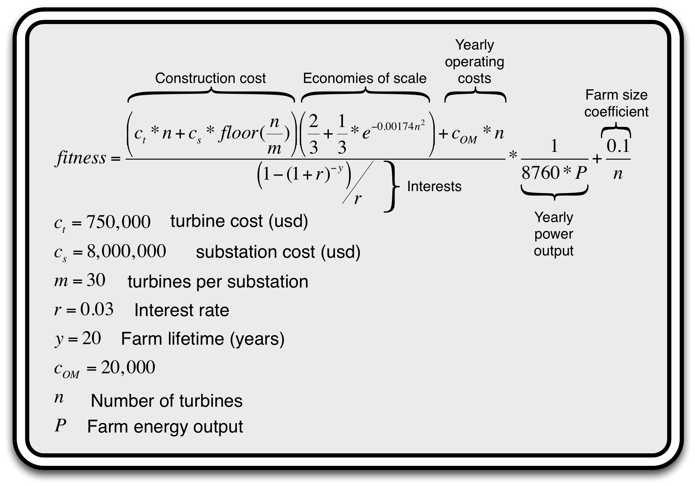

Wind farm design has long been an application domain for evolutionary learning and optimization due to the complexity of the design space, and the discontinuities in the search space caused by the wake effects that make it hard to optimize analytically. Now, with a need to increase the renewable energy portfolio, existing wind farm layout approaches are being tested under a variety of scenarios. Newer models to evaluate layouts and newer constraints emerge, demanding more sophistication from the algorithms.
We propose the following competition to enable a basis of comparison for the existing algorithms and to encourage new ways to solve the wind optimization problem. As part of the competition, we will provide layout evaluators, wind field conditions, and baseline performances for the different layout optimization problems. Competitors are expected to contribute to an open source library for wind farm layout optimization.
Competition Goals
This competition aims to bring more realistic problems to algorithm developers and to create an open source library useful beyond the scope of this competition. Historically, stochastic search has been the basis of the best approaches to solving the wind farm layout optimization problem, and as the industry continues to develop new models, constraints, and situations, it is timely that we propose a method for the integration of these two communities. This competition sets the stage for that integration.
Here, we present an open source library for wind farm layout optimization with an API built to support stochastic search algorithms. We will showcase the state of the art algorithms on a platform where the industry can bring their layout evaluation models. Furthermore, by focusing the problem parameters, we will create mechanisms for the type of uniform comparison that has so far been lacking in this field.

APIs and Interfaces
We will provide an API in C++, Java, and MATLAB for optimization algorithms that interacts with our open source wind layout evaluation model, and a basic scenario consisting of sample wind data and wind farm geography and obstacles. Different implementations of the wake model besides the provided versions will have to be approved and validated in advance. An automated submission system (currently under development) will allow competitors to see their rank on a public leader board.
The APIs and examples of use can be found on the API git repository. Please update your github clone from time to time in order to get the very last updates of the API.
Competition Details
The competition schedule is as follows:
March 15, 2015: Beginning of the competition
June 15, 2015: Final submission deadline => Extended to July 1st, 2015!!!
July 11-15, 2015: Results of the competition at GECCO 2015
The challenge of this year is to optimize the wind farm layout of 5 unknow scenarios (wind forces, layout shapes, etc.) to minimize the cost of energy calculated as follows: 
This cost function corresponds to the production price of a kilowatt: the lower, the better. In comparison to last year edition, this evaluation function provides a more realistic evaluation of the layout. It also increases the complexity of the task: both the number of turbines and their position must be optimized! Large layouts will be rewarded with a better cost of energy but the positions of the turbines are also harder to optimize. Your algorithm will find the perfect balance between both criteria. This year competition also introduces obstacles on the layout: turbines cannot be installed on some specific areas of the layout. This implies that the layout can be discontinuous, with areas surrounded with obstacles.
During the competition, contestants will be given:
- a set of 5 completely new scenarios to optimize,
- a global set of 10,000 layout evaluations for the all 5 scenarios
As the layout evaluation is usually the most computationally part of the optimization, this allotment adds the challenge of computational resource efficiency. Competitors must design effective stop criteria for their algorithms.
Competitors will be compared on each layout to optimize according to the cost of energy function and ranked on each scenario with the following point system:
- 10 points given to the best approach
- 6 points given to the second best approach
- 4 points to the third
- 3 points to the forth
- 2 points to the fifth
- 1 point to the sixth
The winner will be the one with the maximum of points.
Submission
The API provides a function or a class (in a file named CompetitionEvaluator.*) in each programming language to evaluate the layouts directly in the cloud. The competitor algorithm is run locally on the competitor's machine and, when necessary, the algorithm calls this function to evaluate a given layout on the competition server. It returns all the necessary information to evaluate the layout (cost of energy, energy output, energy output per turbine and per angle, wake free ratio). To use the competition server, the competitors must first register on the leaderboard website. Once done, the user receives a user token which must be used to run the evaluations. When the user starts a new run (evaluation of layouts on the 5 scenarios), he/she also receives a new run token which can be used to resume a run. Multiple run tokens can be created but only the best result for one user will be kept at the end of the competition! The leaderboard will be automatically updated while the runs are going.
After the deadline (July 1st 2015), 5 new scenarios will be generated. The competitors will have to rerun their algorithms on these new scenarios with 1 final run token (and no more). This final run is due on July 3rd. The leaderboard will be hidden and the results will be given during the conference GECCO 2015 in Madrid.
The server will be closed once the deadline past and a snapshot of the leaderboard will be used to get the final ranking. In addition to that, the competitors must send 1 slide (pdf, powerpoint or keynote) that explains the method used. This slide must be sent to the organizers by email (see the contact section).
Congratulation to Carlos Segura and the CIMAT team that win the 2015 editions! More details about the results can be found in the slides presented during the conference GECCO 2015. They can be downloaded here.
Competition Organizers
Dennis Wilson: dennisw@mit.edu
Sylvain Cussat-Blanc: sylvain.cussat-blanc@irit.fr
Silvio Rodrigues: s.m.fragosorodrigues@tudelft.nl
Kalyan Veeramachaneni: kalyan@csail.mit.edu